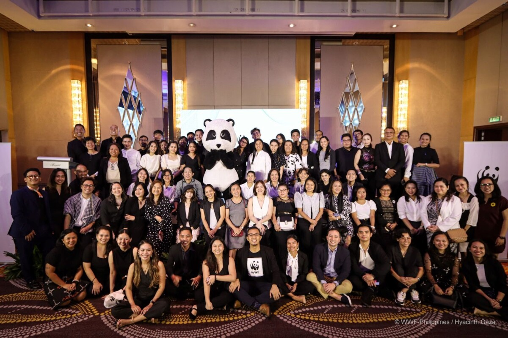
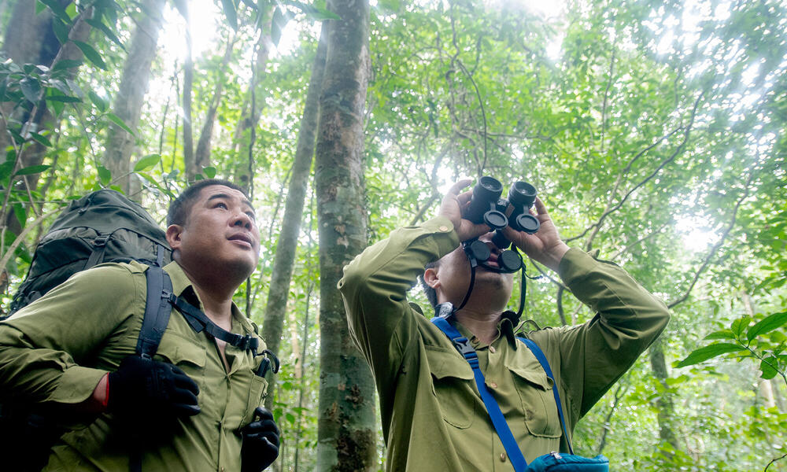

Earth Hour: WWF's Earth Hour is an annual global movement that transcends borders, encouraging individuals, communities, and businesses to symbolically turn off non-essential lights for one hour. This collective act serves as a powerful commitment to the planet and raises awareness about the urgent need for climate action. Earth Hour has grown into a massive event, showcasing the significance of individual actions in the face of climate change and prompting discussions on sustainability and energy conservation.
Tiger Conservation: WWF's commitment to tiger conservation extends beyond mere admiration for these majestic creatures. The organization actively engages in comprehensive campaigns to safeguard tigers and their habitats. This involves not only combating the immediate threats of poaching but also addressing broader issues such as habitat destruction and human-wildlife conflict. By collaborating with governments and local communities, WWF strives to create sustainable solutions that ensure the survival of these iconic big cats.
Panda Conservation: With its unmistakable black-and-white coat, the giant panda holds a special place in the hearts of conservationists and the public alike. WWF's ongoing campaigns for panda conservation are multi-faceted, encompassing habitat restoration, anti-poaching initiatives, and community engagement in China's bamboo forest regions. The organization recognizes that preserving pandas goes hand in hand with safeguarding the rich biodiversity of their habitats.
Oceans and Fisheries: WWF's initiatives in oceans and fisheries highlight the critical need for sustainable practices to protect marine ecosystems. Through targeted campaigns, the organization advocates for responsible fishing methods, combats illegal fishing activities, and plays a crucial role in establishing marine protected areas. These efforts contribute not only to the well-being of marine life but also to the livelihoods of communities dependent on healthy oceans.
Forestry and Deforestation: Deforestation remains a pressing global issue, and WWF is at the forefront of campaigns to combat this threat. The organization works tirelessly to promote responsible forestry practices, engaging with governments, businesses, and local communities to address the underlying causes of deforestation. By advocating for sustainable land use, WWF aims to strike a balance between human needs and the preservation of vital ecosystems.
Climate Action: Recognizing the urgency of climate change, WWF actively participates in global campaigns advocating for meaningful climate action. From supporting renewable energy initiatives to promoting energy efficiency, the organization contributes to the global discourse on mitigating climate change. Additionally, its involvement in international climate negotiations underscores the need for collaborative efforts to address the far-reaching impacts of a changing climate.
Water Stewardship: WWF's water stewardship initiatives emphasize responsible water resource management. These campaigns tackle issues such as water scarcity and pollution, advocating for sustainable practices in agriculture and industry. By addressing the complex challenges related to water, WWF aims to ensure the longevity of this essential resource while fostering a deeper understanding of the intricate connections between water, ecosystems, and human well-being.

Global Forest Watch: In a concerted effort to combat deforestation and promote sustainable forestry practices, WWF collaborates with organizations such as the World Resources Institute (WRI) through initiatives like Global Forest Watch. This strategic partnership harnesses technology and real-time data to provide a comprehensive platform for monitoring and addressing deforestation on a global scale. By leveraging cutting-edge tools and engaging with governments, NGOs, and local communities, WWF contributes to the development of actionable insights and solutions to mitigate the impacts of deforestation on biodiversity and climate.
Climate and Clean Air Coalition (CCAC): Acknowledging the urgency of addressing climate change, WWF actively participates in the Climate and Clean Air Coalition (CCAC), a collaborative effort that brings together governments, NGOs, and the private sector. The coalition focuses on reducing short-lived climate pollutants, such as methane and black carbon, recognizing their significant role in global warming. By fostering international cooperation and advocating for targeted actions, WWF contributes to the development of strategies to curb these pollutants and slow down the rate of climate change.
The Global Alliance for Sustainable Supply Chains: WWF recognizes the pivotal role of businesses in promoting sustainability and responsible resource management. Through initiatives like The Global Alliance for Sustainable Supply Chains, WWF collaborates with partners across sectors to advocate for and implement responsible business practices. This includes sustainable sourcing of commodities, reducing environmental impacts across supply chains, and fostering a culture of corporate responsibility that aligns with conservation goals.
The Roundtable on Sustainable Palm Oil (RSPO): In addressing the environmental challenges associated with the palm oil industry, WWF collaborates with the Roundtable on Sustainable Palm Oil (RSPO). This multi-stakeholder initiative, which includes palm oil producers, environmental organizations, and consumer goods companies, works towards promoting sustainable practices within the industry. WWF's involvement in the RSPO contributes to efforts to mitigate deforestation, protect biodiversity, and establish responsible standards for palm oil production.
Water Risk Filter: Recognizing the critical importance of sustainable water resource management, WWF collaborates with the German development agency GIZ and the German Ministry for Economic Cooperation and Development on the Water Risk Filter. This innovative tool empowers businesses to assess and manage water-related risks in their operations and supply chains. By combining expertise from multiple sectors, this collaboration seeks to enhance water resilience and promote responsible water stewardship in corporate practices.
The Renewable Energy Buyers Alliance (REBA): To accelerate the transition to a sustainable energy future, WWF collaborates within the Renewable Energy Buyers Alliance (REBA). This initiative brings together businesses, NGOs, and other stakeholders to facilitate large-scale corporate renewable energy procurement. By advocating for and supporting the adoption of renewable energy solutions, WWF contributes to efforts aimed at reducing carbon emissions and promoting a more sustainable energy landscape.
The Forest Stewardship Council (FSC): WWF's collaboration with the Forest Stewardship Council (FSC) underscores its commitment to promoting responsible forestry practices. FSC is a certification system that sets standards for sustainable and responsible wood sourcing. By working with FSC, WWF contributes to efforts to combat deforestation, protect vital ecosystems, and ensure the responsible management of forest resources.
Plastics Economy Global Commitment: In response to the global plastic pollution crisis, WWF actively participates in the New Plastics Economy Global Commitment led by the Ellen MacArthur Foundation. This collaborative initiative unites businesses, governments, and NGOs in a shared commitment to addressing the challenges of plastic waste through the adoption of circular economy principles. WWF's involvement contributes to the development and implementation of strategies to reduce plastic pollution and promote a more sustainable approach to the use and disposal of plastic materials.

WWF has many latest projects which includes "Enduring Earth: Accelerating Sustainable Finance Solutions to Achieve Durable Conservation", "CONVEI: Collaborative Network for Valuing Earth Information", "Food Loss Starts at the Soil: Embedding Circularity in the Transition to Regenerative Agriculture", "WWF and USAID: Conserving Biodiversity in Vietnam", "WILDLABS.NET: Connectivity and collaboration to save the planet", and many more